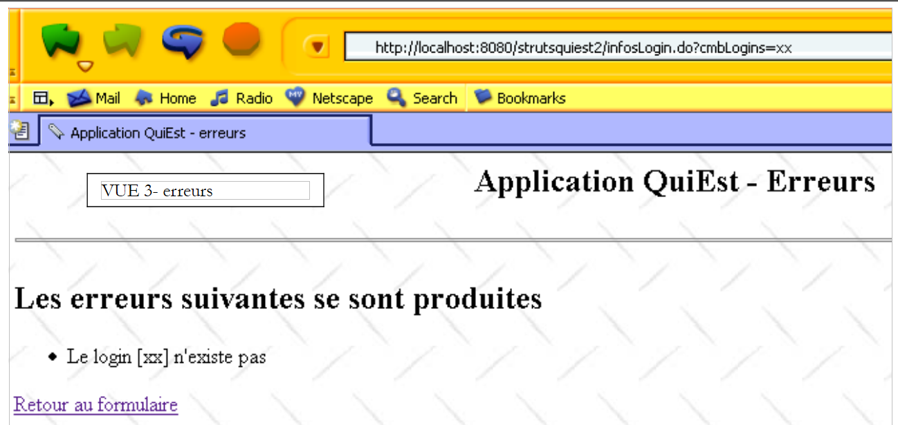
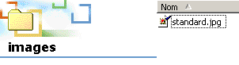
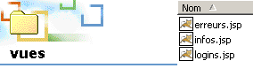
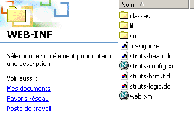

7. QuiEst-Anwendung
Hier beschreiben wir eine Struts-Anwendung, die etwas anspruchsvoller ist als die vorherigen, die aus didaktischen Gründen einfach gehalten wurden.
7.1. Die Klasse „users“
Wir haben eine Java-Klasse, die Informationen über die Benutzer eines Unix-Rechners speichert. Diese Informationen werden in drei spezifischen Dateien gespeichert:
- /etc/passwd: Liste der Benutzer
- /etc/group: Liste der Gruppen
- /etc/aliases: Liste der E-Mail-Aliase
Der Inhalt dieser drei Dateien lautet wie folgt:
- /etc/passwd
Die Zeilen in dieser Datei haben das folgende Format:
login:pwd:uid:gid:id:dir:shell
wobei
Benutzername | |
ihr verschlüsseltes Passwort | |
Benutzer-ID | |
seine Gruppen-ID | |
seine Identität | |
sein Anmeldeverzeichnis | |
seine Shell |
Die Zeile eines Benutzers könnte also wie folgt aussehen:
Der vorgenannte Benutzer hat die ID 110 und gehört zur Gruppe 57. Die Definition der Gruppe 57 findet sich in der Datei /etc/group.
- /etc/group
Die Zeilen in dieser Datei haben das folgende Format:
nomGroupe:pwd:gid:membre1,membre2,....
mit
Gruppenname | |
verschlüsseltes Passwort – dieses Feld ist normalerweise leer | |
Gruppen-ID | |
Benutzeranmeldungen – dieses Feld kann leer sein |
Die Zeile für Gruppe 57 oben könnte also wie folgt lauten:
was bedeutet, dass die Gruppe 57 den Namen iup2-auto trägt.
- /etc/aliases
Die Zeilen in dieser Datei haben das folgende Format:
mit
Alias | |
ein oder mehrere Tabulatorzeichen | |
der Benutzername des Benutzers, zu dem der Alias gehört |
Somit lautet die Zeile
guillaume.dupond: dupond
bedeutet, dass der Alias guillaume.dupond zu dem Benutzer mit dem Anmeldenamen dupond gehört. Denken Sie daran, dass Aliase in E-Mail-Adressen verwendet werden. Wenn also im vorherigen Beispiel der Unix-Rechner den Namen shiva.istia.univ-angers.fr trägt, wird eine E-Mail an guillaume.dupond@shiva.istia.univ-angers.fr an das Postfach des Benutzers mit dem Anmeldenamen dupond auf diesem Rechner zugestellt.
Wir werden uns hier nicht die gesamte Schnittstelle der Klasse users ansehen, sondern lediglich ihren Konstruktor und einige Methoden:
import java.io.*;
import java.util.*;
public class users{
// attributes
private Hashtable usersByLogin=new Hashtable(); // login --> login, pwd, ..., dir
private ArrayList erreurs=new ArrayList(); // list of error messages
....
// manufacturer
public users(String usersFileName, String groupsFileName, String aliasesFileName) throws Exception {
// usersFileName: name of the user file with lines of the form
// login:pwd:uid:gid:id:dir:shell
// groupsFileName: name of the group file with lines of the form
// name:pwd:number:member1,member2,...
// aliasesFileName: name of alias file with lines of the form
// alias:[tab]login
// builds the usersByLogin dictionary
....
}// manufacturer
// user list
public Hashtable getUsersByLogin(){
return usersByLogin;
}
// errors
public ArrayList getErreurs(){
return erreurs;
}
Ein Wörterbuch (Hashtable), dessen Schlüssel die Anmeldedaten aus der passwd-Datei sind. Der jedem Schlüssel zugeordnete Wert ist ein Array von Zeichenfolgen (String[7]), dessen Elemente die 7 Felder der passwd-Dateizeile sind, die dem Anmeldedaten zugeordnet ist. Einige Felder können leer sein, wenn die Zeile weniger als 7 Felder enthält. | |
Liste der Fehlermeldungen – leer, wenn keine Fehler vorliegen |
7.2. Die Webanwendung
Wir schlagen vor, die folgende Webanwendung (Formularseite) zu erstellen:
 |
Nr. | Name | HTML-Typ | Rolle |
1 | cmbLogins | <select ...>...</select> | zeigt eine Liste aller Anmeldungen an, für die Informationen angefordert werden können |
2 | btnSearch | <input type="submit" ...> | um die Suche zu starten |
Wenn der Benutzer auf die Schaltfläche [Suchen] (2) klickt, wird der Login aus (1) bei einem U-Objekt vom Typ „users“ abgefragt. Wenn der Login existiert, wird die folgende Antwort zurückgegeben (Infoseite):
 |
Wie die Browser-URL oben zeigt, werden die Formularparameter über eine GET-Anfrage an den Server gesendet. Wir können dem Browser daher direkt diese URL mit den Parametern übergeben. Genau das tun wir hier, um einen nicht existierenden Login einzugeben. Wir erhalten die folgende Antwort (Fehlerseite):
 |
7.3. Die Anwendungsarchitektur
 |
Diese Architektur umfasst die folgenden Komponenten:
- die Ansichten:
- logins.jsp, dient zur Anzeige der Liste der Anmeldungen (Ansicht 1)
- infos.jsp, dient zur Anzeige von Informationen zu einem Login (Ansicht 2)
- erreurs.jsp, dient zur Anzeige einer Liste von Fehlern (Ansicht 3)
- Formulare vom Typ ActionForm, die von den Aktionen verwendet werden:
- formLogins, dient zum Erfassen von Daten aus dem Formular logins.jsp
- die Aktionen:
- SetupLoginAction, die den Inhalt von form.jsp vorbereitet und anschließend diese Ansicht anzeigt
- InfosLoginAction, die den Inhalt von logins.jsp verarbeitet, sobald dieser an den Server gesendet wurde
- ForwardAction, die den Link [Zurück zum Formular] in den Ansichten infos.jsp und erreurs.jsp verarbeitet
- die Benutzer-Business-Klasse, die von den Aktionen zum Abrufen ihrer Daten verwendet wird
- das Modell, das von den drei Flatfiles passwd, group und aliases bereitgestellt wird
7.4. Die Konfigurationsdateien der Webanwendung
7.4.1. Die Datei „server.xml“
Der Anwendungskontext erhält den Namen /strutsquiest2. Wir fügen daher die folgende Zeile in die Datei server.xml von Tomcat ein:
Sobald dies erledigt ist, müssen wir Tomcat möglicherweise neu starten, damit es den neuen Kontext erkennt. Wir können überprüfen, ob er gültig ist, indem wir die URL http://localhost:8080/strutsquiest2 aufrufen.
7.4.2. Die Datei web.xml
Die Konfigurationsdatei web.xml der Anwendung sieht wie folgt aus:
<?xml version="1.0" encoding="UTF-8"?>
<!DOCTYPE web-app PUBLIC "-//Sun Microsystems, Inc.//DTD Web Application 2.2//EN" "http://java.sun.com/j2ee/dtds/web-app_2_2.dtd">
<web-app>
<servlet>
<servlet-name>strutsquiest2</servlet-name>
<servlet-class>istia.st.struts.quiest.Quiest2ActionServlet</servlet-class>
<init-param>
<param-name>config</param-name>
<param-value>/WEB-INF/struts-config.xml</param-value>
</init-param>
<init-param>
<param-name>passwdFileName</param-name>
<param-value>data/passwd</param-value>
</init-param>
<init-param>
<param-name>groupFileName</param-name>
<param-value>data/group</param-value>
</init-param>
</servlet>
<servlet-mapping>
<servlet-name>strutsquiest2</servlet-name>
<url-pattern>*.do</url-pattern>
</servlet-mapping>
</web-app>
Diese web.xml-Datei führt eine neue Funktion ein. Der Struts-Controller ist nicht mehr org.apache.struts.action.ActionServlet, sondern eine abgeleitete Klasse, die wir hier istia.st.struts.quiest.Quiest2ActionServlet genannt haben. Dies ermöglicht es uns, die beiden Initialisierungsparameter abzurufen: passwdFileName (Speicherort der Passwortdatei) und groupFileName (Speicherort der Gruppendatei). Die Alias-Datei wird in dieser Anwendung nicht benötigt.
7.4.3. Die Datei struts-config.xml
Die Datei struts-config.xml sieht wie folgt aus:
<?xml version="1.0" encoding="ISO-8859-1" ?>
<!DOCTYPE struts-config PUBLIC
"-//Apache Software Foundation//DTD Struts Configuration 1.1//EN"
"http://jakarta.apache.org/struts/dtds/struts-config_1_1.dtd">
<struts-config>
<form-beans>
<form-bean name="formLogins" type="org.apache.struts.action.DynaActionForm">
<form-property name="cmbLogins" type="java.lang.String" initial=""/>
<form-property name="tLogins" type="java.lang.String[]"/>
</form-bean>
</form-beans>
<action-mappings>
<action
path="/init"
name="formLogins"
validate="false"
scope="session"
type="istia.st.struts.quiest.SetupLoginsAction"
>
<forward name="afficherLogins" path="/vues/logins.jsp"/>
<forward name="afficherErreurs" path="/vues/erreurs.jsp"/>
</action>
<action
path="/infosLogin"
name="formLogins"
validate="false"
scope="session"
type="istia.st.struts.quiest.InfosLoginAction"
>
<forward name="afficherErreurs" path="/vues/erreurs.jsp"/>
<forward name="afficherInfos" path="/vues/infos.jsp"/>
</action>
<action
path="/retourLogins"
parameter="/vues/logins.jsp"
type="org.apache.struts.actions.ForwardAction"
/>
</action-mappings>
<message-resources
parameter="istia.st.struts.quiest.ApplicationResources"
null="false"
/>
</struts-config>
Sie enthält drei Hauptabschnitte:
- die Deklaration von Formularen im Abschnitt <form-beans>
- die Deklaration von Aktionen im Abschnitt <action-mappings>
- die Deklaration der Ressourcendatei im Abschnitt <message-resources>
7.4.4. Die Formularobjekte (Beans) der Anwendung
<form-beans>
<form-bean name="formLogins" type="org.apache.struts.action.DynaActionForm">
<form-property name="cmbLogins" type="java.lang.String" initial=""/>
<form-property name="tLogins" type="java.lang.String[]"/>
</form-bean>
</form-beans>
In unserer Anwendung gibt es nur eine Formular-Bean namens formLogins, deren Typ von DynaActionForm abgeleitet ist. Sie wird in den folgenden Situationen verwendet:
- um die Daten zu enthalten, die zur Anzeige von Ansicht Nr. 1 benötigt werden
- zum Abrufen der Werte aus dem Formular in Ansicht Nr. 1, wenn der Benutzer es absendet
Die Struktur der „formLogins“-Bean ist mit dem Formular in Ansicht Nr. 1 verknüpft. Sehen wir uns das einmal an:
 |
Nr. | Name | HTML-Typ | Rolle |
1 | cmbLogins | <select ...>...</select> | zeigt eine Liste aller Anmeldungen an, für die Informationen angefordert werden können |
2 | btnSearch | <input type="submit" ...> | um die Suche zu starten |
Unterscheiden wir verschiedene Fälle:
- Vom Client zum Server wird das Objekt formLogins verwendet, um die Werte aus dem obigen HTML-Formular zu speichern, die über die Schaltfläche [Submit] übermittelt werden. Es benötigt daher ein Feld cmbLogins, um den Wert des HTML-Feldes cmbLogins zu empfangen, d. h. den vom Benutzer gewählten Login.
- Vom Server zum Client wird das Objekt „formLogins“ verwendet, um den Anfangsinhalt für Ansicht Nr. 1 bereitzustellen. Sein Feld „tLogins“ dient als Inhalt für Liste Nr. 1. Sein Feld „cmbLogins“ wird verwendet, um das Element in Liste Nr. 1 festzulegen, das ausgewählt werden soll.
7.4.5. Anwendungsaktionen
Aktionen werden von Objekten des Typs „Action“ oder abgeleiteten Typen verarbeitet. Aktionen werden innerhalb der <action-mappings>-Tags konfiguriert:
<action-mappings>
<action
path="/init"
name="formLogins"
validate="false"
scope="session"
type="istia.st.struts.quiest.SetupLoginsAction"
>
<forward name="afficherLogins" path="/vues/logins.jsp"/>
<forward name="afficherErreurs" path="/vues/erreurs.jsp"/>
</action>
<action
path="/infosLogin"
name="formLogins"
validate="false"
scope="session"
type="istia.st.struts.quiest.InfosLoginAction"
>
<forward name="afficherErreurs" path="/vues/erreurs.jsp"/>
<forward name="afficherInfos" path="/vues/infos.jsp"/>
</action>
<action
path="/retourLogins"
parameter="/vues/logins.jsp"
type="org.apache.struts.actions.ForwardAction"
/>
</action-mappings>
Die Aktion /init
<action
path="/init"
name="formLogins"
validate="false"
scope="session"
type="istia.st.struts.quiest.SetupLoginsAction"
>
<forward name="afficherLogins" path="/vues/logins.jsp"/>
<forward name="afficherErreurs" path="/vues/erreurs.jsp"/>
</action>
Beschreiben wir nun, wie die Aktion /init funktioniert:
- Die Aktion /init wird normalerweise nur einmal während des ersten Anfrage-Antwort-Zyklus ausgeführt, wenn der Benutzer die URL http://localhost:8080/strutsquiest2/init.do
- Das formsLogins-Objekt wird erstellt oder wiederverwendet. Es wird gemäß der Angabe im scope-Attribut aus der Sitzung abgerufen (Wiederverwendung) oder dort abgelegt (Erstellung).
- Seine reset-Methode wird aufgerufen. Beachten Sie, dass diese Methode in der ActionForm-Klasse und ihren Ableitungen standardmäßig nichts tut. Sie wird unmittelbar vor dem Kopieren der Daten aus der Client-Anfrage in das ActionForm-Objekt aufgerufen und dient dazu, das Objekt vor diesem Kopiervorgang zu löschen. Was ist hier die Client-Anfrage? Die Aktion /init wird ausgelöst, wenn die angeforderte URL http://localhost:8080/strutsquiest2/init.do lautet. Diese URL kann über einen GET- oder einen POST-Request aufgerufen werden. Es reicht aus, in diesem Request Parameter mit den Namen der formLogins-Felder anzugeben, damit diese initialisiert werden, wie im folgenden Beispiel gezeigt:

- Die Anfrage enthält den Parameter cmbLogins (afterpak). Der Struts-Controller hat daher den Wert dieses Parameters in das Feld cmbLogins von formLogins kopiert. Anschließend wurde die Aktion SetupLoginsAction ausgeführt und mit der Anzeige der Ansicht logins.jsp abgeschlossen. Diese Ansicht enthält ein Formular, in dem bestimmte Felder ihre Werte aus formLogins beziehen. Somit erhielt das HTML-Auswahlfeld mit dem Namen cmbLogins seinen Wert aus dem Feld cmbLogins (=afterpak) in formLogins. Aus diesem Grund erscheint die Liste der Logins so positioniert, dass sie auf dem Login „afterpak“ liegt.
- Wir könnten auch versuchen, einen tLogins-Parameter wie folgt zu übergeben:
Dadurch würde das Feld „tLogins“ von „formLogins“ mit dem Array {"login1", "login2"} initialisiert werden. Wie wir jedoch später sehen werden, weist die Aktion „SetupLoginsAction“ dem Feld „tLogins“ einen Wert zu und ersetzt das so erstellte Array durch ein neues Array. Es ist dieses letztere Array, das in der Ansicht „logins.jsp“ erscheint.
- Die vorangegangene Erörterung, wenn auch etwas komplex, zeigt, dass wir nicht davon ausgehen können, dass die Aktion /init ohne Parameter vom Client ausgelöst wird. Es kann daher sinnvoll sein, die Methode reset zu verwenden, um formLogins zu löschen. In diesem Fall müssten wir die Klasse DynaActionForm erweitern. Dies haben wir hier nicht getan.
- Sobald die reset-Methode von formLogins aufgerufen wird, kopiert der Controller die Daten aus der Client-Anfrage in die gleichnamigen Felder in formLogins. Normalerweise wird die /init-Aktion ohne Client-Parameter aufgerufen, aber wir haben zuvor gezeigt, dass nichts den Client daran hindert, die /init-Aktion mit beliebigen Parametern aufzurufen. Am Ende dieser Phase können die Felder cmbLogins und tLogins daher durchaus einen Wert enthalten. Wir haben gesehen, dass das Feld cmbLogins diesen Wert beibehalten würde, das Feld tLogins jedoch nicht.
- Der Controller überprüft dann das validate-Attribut der Aktion. Hier hat es den Wert „false“. Die validate-Methode von formLogins wird nicht aufgerufen. Wir werden sie daher nicht schreiben.
- Das SetupLoginsAction-Objekt wird erstellt oder wiederverwendet, falls es bereits existierte, und seine execute-Methode wird aufgerufen. Ihr einziger Zweck besteht darin, dem Feld tLogins von formLogins einen Wert zuzuweisen. Dieser Wert ist das Array der Logins, das von der Business-Klasse users angefordert wird. Dieser Vorgang kann fehlschlagen. Aus diesem Grund können auf die Aktion /init zwei Ansichten folgen:
- die Ansicht errors.jsp, wenn die Benutzerklasse das Array der Anmeldungen nicht bereitstellen konnte
- andernfalls die Ansicht „logins.jsp“
- Der Controller zeigt eine dieser beiden Ansichten an
- Der Anfrage-Antwort-Zyklus für die Aktion /init ist abgeschlossen.
Die Aktion /infosLogin
<action
path="/infosLogin"
name="formLogins"
validate="false"
scope="session"
type="istia.st.struts.quiest.InfosLoginAction"
>
<forward name="afficherErreurs" path="/vues/erreurs.jsp"/>
<forward name="afficherInfos" path="/vues/infos.jsp"/>
</action>
Beschreiben wir nun, wie die Aktion /infosLogin funktioniert:
- Die Aktion /infosLogin wird normalerweise ausgelöst, wenn der Benutzer in der Ansicht „logins.jsp“ auf die Schaltfläche [Suchen] klickt. Daraufhin wird eine Anfrage an den Server gesendet, wie durch den HTML-Tag <form> in der Ansicht festgelegt:
<html:form name="formLogins" method="get" action="/infosLogin" type="org.apache.struts.action.DynaActionForm">
- Wir sehen, dass die Anfrage mit der GET-Methode an den Server gesendet wird. Der Benutzer kann sie daher manuell eingeben:

- Das formsLogins-Objekt wird erstellt oder wiederverwendet. Es wird gemäß der Angabe im scope-Attribut aus der Sitzung abgerufen (Wiederverwendung) oder in die Sitzung geschrieben (Erstellung).
- Seine reset-Methode wird aufgerufen, kurz bevor die Daten aus der Anfrage des Clients in das ActionForm-Objekt kopiert werden. Normalerweise hat sie die Form http://localhost:8080/strutsquiest2/infosLogin.do?cmbLogins=xx, wobei xx ein aus der Liste der Logins ausgewähltes Login ist. Es kann aber auch beliebig sein, wenn der Benutzer die vorherige URL verwendet hat, indem er beliebige Parameter übergeben hat. Betrachten Sie die folgende Abfolge von Seiten:

- Die Aktion /infosLogin wurde mit der Parameterzeichenfolge cmbLogins=xx&tLogins=login1&tLogins=login2 aufgerufen. Die Felder cmbLogins und tLogins von formLogins erhalten daher die Werte „xx“ bzw. {„login1“, „login2“}. Die Aktion /infosLogin fordert die Informationen an, die mit dem Login „xx“ aus der Benutzer-Business-Klasse verknüpft sind. Die Benutzerklasse antwortet, dass dieses Login nicht existiert. Daher die oben angezeigte Ansicht. Verwenden wir nun den Link [Zurück zum Formular] oben:

- Die Aktion /retourLogins wird durch den Link [Zurück zum Formular] ausgelöst. Diese Aktion zeigt einfach die Ansicht logins.jsp an, ohne dass eine Zwischenaktion stattfindet. Erinnern Sie sich daran, dass das Feld tLogins verwendet wird, um die Liste der Logins in der Ansicht logins.jsp zu füllen. Da der Benutzer diesen Wert in {"login1","login2"} geändert hat, erscheinen diese beiden Logins nun in der Liste. Wir können nicht oft genug betonen, wie absolut notwendig es ist, bei der Ausführung einer Anwendung beliebige Parameter zu berücksichtigen, die von einem Benutzer oder einem Programm gesetzt werden. Die Lösung für das hier dargestellte Problem wäre, dass der Link [Zurück zum Formular] auf die Aktion /init verweist. Dies würde sicherstellen, dass die korrekte Liste der Logins zurückgegeben wird.
- Kehren wir zu einer normalen Anfrage an die Aktion /infosLogin zurück, wie zum Beispiel:
http://localhost:8080/strutsquiest2/infosLogin.do?cmbLogins=afterpak
- Der Struts-Controller weist dem Feld „cmbLogins“ des ActionForm-Objekts einen Wert zu. Dem Feld „tLogins“ wird jedoch kein Wert zugewiesen (in der gesendeten Anfrage gibt es kein entsprechendes Feld). Dieses Verhalten kommt uns entgegen. Daher müssen wir keine benutzerdefinierte Reset-Methode für „formLogins“ schreiben.
- Sobald die Reset-Methode von formLogins aufgerufen wird, kopiert der Controller die Daten aus der Client-Anfrage in die gleichnamigen Felder in formLogins. Das Feld cmbLogins erhält einen Wert: den vom Benutzer gewählten Login (afterpak).
- Der Controller überprüft dann das „validate“-Attribut der Aktion. Hier hat es den Wert „false“. Die „validate“-Methode von formLogins wird nicht aufgerufen.
- Das InfosLoginAction-Objekt wird erstellt oder, falls bereits vorhanden, wiederverwendet, und seine execute-Methode wird aufgerufen. Seine Aufgabe ist es, die mit dem cmbLogins-Login verbundenen Informationen abzurufen. Diese Informationen werden von der Business-Klasse des Benutzers angefordert. Dieser Vorgang kann fehlschlagen (z. B. wenn das Login nicht existiert). Aus diesem Grund können auf die Aktion /infosLogin zwei Views folgen:
- die Ansicht „errors.jsp“, falls die Benutzerklasse die angeforderten Informationen nicht bereitstellen konnte
- ansonsten die Ansicht „infos.jsp“
- zeigt der Controller eine dieser beiden Ansichten an
- Der Anfrage-Antwort-Zyklus für die Aktion /infosLogin ist abgeschlossen.
Die Aktion /retourLogins
<action
path="/retourLogins"
parameter="/vues/logins.jsp"
type="org.apache.struts.actions.ForwardAction"
/>
- Die Aktion /retourLogins wird durch Klicken auf den Link [Zurück zum Formular] auf den Seiten erreurs.jsp und infos.jsp ausgelöst.
- Hier ist der Aktion kein Formular zugeordnet. Wir fahren daher sofort mit der Ausführung der execute-Methode eines ForwardAction-Objekts fort, die ein ActionForward-Objekt zurückgibt, das auf die Ansicht /vues/logins.jsp verweist.
7.4.6. Die Meldungsdatei der Anwendung
Der dritte Abschnitt der Datei struts-config.xml ist die Meldungsdatei:
Die Datei „ApplicationResources.properties“ befindet sich im Verzeichnis WEB-INF/classes/istia/st/struts/quiest. Ihr Inhalt lautet wie folgt:
errors.header=<ul>
errors.footer=</ul>
parametreManquant=<li>Le paramètre [{0}] n'a pas été initialisé</li>
usersException=<li>Erreur d'initialisation de l'application : {0}</li>
loginInconnu=<li>Le login [{0}] n'existe pas</li>
7.5. Code anzeigen
Leser, die den unten dargestellten View-Code nicht verstehen, sollten sich die Lektion zur Formularverarbeitung ansehen.
7.5.1. Die Ansicht logins.jsp
Beachten Sie, dass diese Ansicht in zwei Fällen angezeigt wird:
- wenn die Aktion /init während des ersten Anfrage-Antwort-Zyklus aufgerufen wird
- wenn die Aktion /retourLogins während nachfolgender Zyklen aufgerufen wird
Der Code für die Ansicht „logins.jsp“ lautet wie folgt:
<%@ taglib uri="/WEB-INF/struts-html.tld" prefix="html" %>
<html>
<head>
<title>Quiest - formulaire</title>
</head>
<body background="<html:rewrite page="/images/standard.jpg"/>">
<center>
<h2>Application QuiEst</h2>
<hr>
<html:form name="formLogins" method="get" action="/infosLogin" type="org.apache.struts.action.DynaActionForm">
<table>
<tr>
<td>Login cherché</td>
<td>
<html:select name="formLogins" property="cmbLogins">
<html:options name="formLogins" property="tLogins"/>
</html:select>
</td>
<td>
<html:submit value="Chercher"/>
</td>
</tr>
</table>
</html:form>
</center>
</body>
</html>
7.5.2. Die Ansicht infos.jsp
Diese Ansicht wird angezeigt, wenn die Aktion /infosLogin erfolgreich aufgerufen wurde. Ihr Code lautet wie folgt:
<%@ taglib uri="/WEB-INF/struts-html.tld" prefix="html" %>
<%@ taglib uri="/WEB-INF/struts-bean.tld" prefix="bean" %>
<html>
<head>
<title><bean:write name="infosLoginBean" scope="request" property="titre"/></title>
</head>
<body background="<html:rewrite page="/images/standard.jpg"/>">
<h2><bean:write name="infosLoginBean" scope="request" property="titre"/></h2>
<hr>
<table border="1">
<tr>
<th>login</th><th>pwd</th><th>uid</th><th>gid</th><th>id</th><th>dir</th><th>shell</th>
</tr>
<tr>
<td><bean:write name="infosLoginBean" scope="request" property="infosLogin[0]"/></td>
<td><bean:write name="infosLoginBean" scope="request" property="infosLogin[1]"/></td>
<td><bean:write name="infosLoginBean" scope="request" property="infosLogin[2]"/></td>
<td><bean:write name="infosLoginBean" scope="request" property="infosLogin[3]"/></td>
<td><bean:write name="infosLoginBean" scope="request" property="infosLogin[4]"/></td>
<td><bean:write name="infosLoginBean" scope="request" property="infosLogin[5]"/></td>
<td><bean:write name="infosLoginBean" scope="request" property="infosLogin[6]"/></td>
</tr>
</table>
<br>
<html:link page="/retourLogins.do">
Retour au formulaire
</html:link>
</body>
</html>
Diese Ansicht verwendet ein Objekt namens infosLoginBean, das von der Aktion /infosLogin in die Anfrage eingefügt wird. Dieses Objekt hat zwei Felder:
String titre; // titre à afficher dans la vue
String[] infosLogin; // tableau des informations à afficher dans la vue
Wir werden diese Klasse genauer besprechen, wenn wir den Code für die Klasse „InfosLoginAction“ behandeln.
7.5.3. Die Ansicht errors.jsp
Diese Ansicht wird angezeigt, wenn die Aktionen /init oder /infosLogin zu einem Fehler führen. Ihr Code lautet wie folgt:
<%@ taglib uri="/WEB-INF/struts-html.tld" prefix="html" %>
<html>
<head>
<title>Application QuiEst - erreurs</title>
</head>
<body background="<html:rewrite page="/images/standard.jpg"/>">
<h2 align="center">Application QuiEst - Erreurs</h2>
<hr>
<h2>Les erreurs suivantes se sont produites</h2>
<html:errors/>
<html:link page="/retourLogins.do">
Retour au formulaire
</html:link>
</body>
</html>
7.6. Java-Klassen
Die Datei web.xml verweist auf eine Java-Klasse:
<web-app>
<servlet>
<servlet-name>strutsquiest2</servlet-name>
<servlet-class>istia.st.struts.quiest.Quiest2ActionServlet</servlet-class>
....
</servlet>
...
</web-app>
Die Konfigurationsdatei struts-config.xml verweist auf zwei Java-Klassen:
<action
path="/infosLogin"
name="formLogins"
validate="false"
scope="session"
type="istia.st.struts.quiest.InfosLoginAction"
>
<forward name="afficherErreurs" path="/vues/erreurs.jsp"/>
<forward name="afficherInfos" path="/vues/infos.jsp"/>
</action>
<action
path="/init"
name="formLogins"
validate="false"
scope="session"
type="istia.st.struts.quiest.SetupLoginsAction"
>
<forward name="afficherLogins" path="/vues/logins.jsp"/>
<forward name="afficherErreurs" path="/vues/erreurs.jsp"/>
</action>
7.6.1. Die Klasse Quiest2ActionServlet
Die Klasse Quiest2ActionServlet ist von der Klasse ActionServlet abgeleitet, der Struts-Controller-Klasse. Wir leiten von der Klasse ActionServlet ab, um deren init-Methode anzupassen. Diese Methode, die nur einmal beim ersten Laden des Servlets ausgeführt wird, ermöglicht es uns, ein Geschäftsobjekt vom Typ users zu erstellen. Dieses Objekt muss nur einmal erstellt werden, und die init-Methode ist ein guter Ort, um diese Erstellung durchzuführen. Für die Erstellung des „users“-Objekts sind zwei Dateien erforderlich: die Dateien „passwd“ und „group“. Die Speicherorte dieser beiden Dateien werden als Parameter an das Servlet in der Datei „web.xml“ der Anwendung übergeben:
<servlet>
<servlet-name>strutsquiest2</servlet-name>
<servlet-class>istia.st.struts.quiest.Quiest2ActionServlet</servlet-class>
<init-param>
<param-name>config</param-name>
<param-value>/WEB-INF/struts-config.xml</param-value>
</init-param>
<init-param>
<param-name>passwdFileName</param-name>
<param-value>data/passwd</param-value>
</init-param>
<init-param>
<param-name>groupFileName</param-name>
<param-value>data/group</param-value>
</init-param>
</servlet>
Der Servlet-Code lautet wie folgt:
package istia.st.struts.quiest;
import java.util.*;
import javax.servlet.*;
import org.apache.struts.action.*;
import istia.st.users.*;
public class Quiest2ActionServlet
extends ActionServlet {
// servlet attributes
private users u = null;
private ActionErrors erreurs = new ActionErrors();
private String[] tLogins;
//init
public void init() throws ServletException {
// don't forget to initialize the parent class
super.init();
// local variables
final String[] initParams = {"passwdFileName", "groupFileName"};
Properties params = new Properties();
// retrieve servlet initialization parameters
ServletConfig config = getServletConfig();
String servletPath = config.getServletContext().getRealPath("/");
for (int i = 0; i < initParams.length; i++) {
String valeur = config.getInitParameter(initParams[i]);
if (valeur == null) {
erreurs.add(ActionErrors.GLOBAL_ERROR, new ActionError("parametreManquant", initParams[i]));
valeur = "";
}
// the parameter
params.setProperty(initParams[i], valeur);
} //for
// return if there were initialization errors
if (erreurs.size() != 0) {
return;
}
// create a users object
try {
u = new users(servletPath + "/" + params.getProperty("passwdFileName"),
servletPath + "/" + params.getProperty("groupFileName"), null);
}
catch (Exception ex) {
erreurs.add(ActionErrors.GLOBAL_ERROR, new ActionError("usersException", ex.getMessage()));
return;
} //catch
// retrieve the list of logins
tLogins = new String[u.getUsersByLogin().size()];
Enumeration eLogins = u.getUsersByLogin().keys();
for (int i = 0; i < tLogins.length; i++) {
tLogins[i] = (String) eLogins.nextElement();
}
// sort logins
Arrays.sort(tLogins);
} //init
// servlet private info access method
public Object[] getInfos() {
return new Object[] {erreurs, u, tLogins};
}
}
Zusammenfassend funktioniert die init-Methode wie folgt:
- Zunächst wird die init-Methode der übergeordneten Klasse (ActionServlet) aufgerufen, damit diese korrekt initialisiert wird
- , dann werden die Initialisierungsparameter gelesen. Fehlen welche, wird das private Attribut `ActionErrors.errors` gefüllt.
- Sind die Initialisierungsparameter vorhanden, wird ein `users`-Objekt erstellt. Bei dieser Erstellung kann eine Ausnahme ausgelöst werden. In diesem Fall wird das Attribut `errors` von `ActionErrors` gefüllt.
- War die Erstellung erfolgreich, wird die Liste aller Anmeldungen aus dem erstellten Objekt abgerufen und in ein Array sortiert, das im privaten Attribut `String[] tLogins` gespeichert wird.
- Das erstellte Benutzerobjekt wird im privaten Attribut `users u` gespeichert.
- Die öffentliche Methode getInfos ruft die drei privaten Attribute (u, errors, tLogins) in ein Array von Objekten ab.
7.6.2. Die Klasse „SetupLoginsAction“
Der Zweck dieser Aktion besteht darin, das DynaActionForm-Objekt formLogins zu initialisieren. Dieses Objekt, das in der Sitzung abgelegt wird, muss danach nicht mehr neu initialisiert werden. Die SetupLoginsAction wird daher nur einmal ausgeführt. Ihr Code lautet wie folgt:
package istia.st.struts.quiest;
import java.io.*;
import javax.servlet.*;
import javax.servlet.http.*;
import org.apache.struts.action.*;
public class SetupLoginsAction
extends Action {
public ActionForward execute(ActionMapping mapping, ActionForm form,
HttpServletRequest request, HttpServletResponse response) throws IOException,ServletException {
// prepares the form to be displayed
// retrieve info from the controller servlet
// infos=(ActionErrors errors, users u, String[] tLogins)
Object[] infos = ( (Quiest2ActionServlet)this.getServlet()).getInfos();
// were there any initialization errors?
ActionErrors erreurs = (ActionErrors) infos[0];
if (!erreurs.isEmpty()) {
this.saveErrors(request, erreurs);
return mapping.findForward("afficherErreurs");
}
// put the logins in the form
DynaActionForm formLogins=(DynaActionForm) form;
formLogins.set("tLogins",infos[2]);
return mapping.findForward("afficherLogins");
}
}
Wie bei allen Struts-Aktionen befindet sich der Code in der Methode „execute“. Diese Methode:
- ruft aus dem Struts-Controller die Informationen ab, die der Controller mithilfe seiner init-Methode gespeichert hat. Dies geschieht über die getServlet()-Methode der Action-Klasse.
- Zu diesen Informationen gehört das Attribut `ActionErrors` des Controllers. Ist diese Fehlerliste nicht leer, wird sie in die Anfrage eingefügt und die Ansicht `errors.jsp` angezeigt.
- Ist die Fehlerliste leer, wird die ursprünglich vom Controller erstellte Liste der Anmeldungen dem Feld tLogins des FormLogins-Beans zugewiesen. Anschließend wird die Ansicht logins.jsp angefordert, die die Liste der Anmeldungen anzeigt.
7.6.3. Die Klassen „InfosLoginBean“ und „InfosLoginAction“
Der Zweck der Aktion „InfosLoginAction“ besteht darin, die mit dem vom Benutzer gewählten Login verbundenen Informationen abzurufen und dem Benutzer anzuzeigen. Die Informationen werden in einem Objekt vom Typ „InfosLoginBean“ gesammelt:
package istia.st.struts.quiest;
public class InfosLoginBean implements java.io.Serializable{
// bean holding the info needed for the info page
private String titre;
private String[] infosLogin;
// manufacturer
public InfosLoginBean(String titre, String[] infosLogin){
this.titre=titre;
this.infosLogin=infosLogin;
}
// getters
public String getTitre(){
return this.titre;
}
public String[] getInfosLogin(){
return this.infosLogin;
}
public String getInfosLogin(int i){
return this.infosLogin[i];
}
}
Die vorstehende Klasse ist ein Bean, d. h. eine Java-Klasse, in der ein privates Attribut T unAttribut automatisch mit zwei privaten Methoden verknüpft ist:
- void setUnAttribut(T value) { unAttribut = value; }
- T getUnAttribut(){ return unAttribut;}
Beachten Sie die spezielle Syntax der get- und set-Methoden. Wenn das Attribut ein Array T[] unAttribut ist, können wir get- und set-Methoden für die Elemente des Arrays erstellen:
- void setUnAttribut(T value, int i) { unAttribut[i] = value; }
- T getUnAttribut(int i) { return unAttribut[i]; }
Um dies besser zu verstehen, sehen wir uns den Code für die Ansicht infos.jsp an, die nach der Aktion InfosLoginAction gesendet werden muss:
<%@ taglib uri="/WEB-INF/struts-html.tld" prefix="html" %>
<%@ taglib uri="/WEB-INF/struts-bean.tld" prefix="bean" %>
<html>
<head>
<title><bean:write name="infosLoginBean" scope="request" property="titre"/></title>
</head>
<body background="<html:rewrite page="/images/standard.jpg"/>">
<h2><bean:write name="infosLoginBean" scope="request" property="titre"/></h2>
<hr>
<table border="1">
<tr>
<th>login</th><th>pwd</th><th>uid</th><th>gid</th><th>id</th><th>dir</th><th>shell</th>
</tr>
<tr>
<td><bean:write name="infosLoginBean" scope="request" property="infosLogin[0]"/></td>
<td><bean:write name="infosLoginBean" scope="request" property="infosLogin[1]"/></td>
<td><bean:write name="infosLoginBean" scope="request" property="infosLogin[2]"/></td>
<td><bean:write name="infosLoginBean" scope="request" property="infosLogin[3]"/></td>
<td><bean:write name="infosLoginBean" scope="request" property="infosLogin[4]"/></td>
<td><bean:write name="infosLoginBean" scope="request" property="infosLogin[5]"/></td>
<td><bean:write name="infosLoginBean" scope="request" property="infosLogin[6]"/></td>
</tr>
</table>
<br>
<html:link page="/retourLogins.do">
Retour au formulaire
</html:link>
</body>
</html>
Nehmen wir den folgenden Tag:
Es weist das System an, den Wert des Feldes „title“ (Eigenschaft) des Objekts „infosLoginBean“ (Name) zu schreiben, das in der Anfrage (Gültigkeitsbereich) enthalten ist. Der zu schreibende Wert wird über request.getAttribute("infosLoginBean").getTitre() abgerufen. Daher muss die Methode getTitre in der Klasse InfosLoginBean vorhanden sein. Dies ist der Fall. Das Tag
Weist das System an, den Wert des Elements „infosLogin[0]“ des in der Anfrage enthaltenen Objekts „infosLoginBean“ zu schreiben. Der zu schreibende Wert wird über „request.getAttribute(„infosLoginBean“).getInfosLogin(0)“ abgerufen. Daher muss die Methode „getInfosLogin(int i)“ in der Klasse „InfosLoginBean“ vorhanden sein. Dies ist der Fall.
Der Zweck der Klasse „InfosLoginAction“ besteht darin, das oben genannte „InfosLoginBean“-Objekt aus einem vom Benutzer gewählten Login zu erstellen. Ihr Code lautet wie folgt:
package istia.st.struts.quiest;
import java.io.*;
import javax.servlet.*;
import javax.servlet.http.*;
import org.apache.struts.action.*;
import istia.st.users.*;
public class InfosLoginAction
extends Action {
public ActionForward execute(ActionMapping mapping, ActionForm form,
HttpServletRequest request, HttpServletResponse response) throws IOException,ServletException {
// should display login information
// retrieve info from the controller servlet
// infos=(ActionErrors errors, users u, LoginBean[] tLogins)
Object[] infos = ( (Quiest2ActionServlet)this.getServlet()).getInfos();
// were there any initialization errors?
ActionErrors erreurs = (ActionErrors) infos[0];
if (!erreurs.isEmpty()) {
this.saveErrors(request, erreurs);
return mapping.findForward("afficherErreurs");
}
// first retrieve this login
String login = (String) ( (DynaActionForm) form).get("cmbLogins");
// do we have anything?
if (login == null) {
// not normal - the login form is returned
DynaActionForm formLogins=(DynaActionForm) form;
formLogins.set("tLogins",infos[2]);
return mapping.findForward("afficherLogins");
}
// we have a login - we're looking for it
String[] infosLogin = (String[]) ( (users) infos[1]).getUsersByLogin().get(login);
// have we found?
if (infosLogin == null) {
// login not found - error page displayed
ActionErrors erreurs2=new ActionErrors();
erreurs2.add(ActionErrors.GLOBAL_ERROR, new ActionError("loginInconnu", login));
this.saveErrors(request, erreurs2);
return mapping.findForward("afficherErreurs");
}
// the login has been found - we put the information found in the query
String titre="Application QuiEst - login["+login+"]";
InfosLoginBean infosLoginBean= new InfosLoginBean(titre,infosLogin);
request.setAttribute("infosLoginBean",infosLoginBean);
return mapping.findForward("afficherInfos");
}
}
Die Methode „execute“ funktioniert wie folgt:
- Sie ruft die Informationen ab, die der Struts-Controller während der Initialisierung gesammelt hat. Wenn der Controller Fehler festgestellt hat, wird die Ausführung an dieser Stelle angehalten und der Benutzer aufgefordert, diese Fehler anzuzeigen.
- Wir prüfen, ob ein Login vorhanden ist. Wenn der Benutzer das Anmeldeformular ausgefüllt hat, ist ein Login vorhanden. Es kann jedoch durchaus vorkommen, dass der Benutzer die URL der Aktion direkt in seinen Browser eingibt, ohne Parameter zu übergeben. Ist kein Login vorhanden, zeigen wir die Liste der Logins erneut an.
- Wenn ein Login vorhanden ist, rufen wir die Informationen ab, die mit der Business-Klasse des Benutzers verknüpft sind. Wenn die Klasse das gesuchte Login nicht finden kann, wird die Fehlerseite angezeigt. Andernfalls wird ein InfosLoginBean-Objekt erstellt, um die von der Ansicht infos.jsp benötigten Informationen zu speichern. Dieses Objekt wird in die Anfrage eingefügt, und die Seite infos.jsp wird angezeigt.
7.7. Bereitstellung
Die Verzeichnisstruktur der Anwendung sieht wie folgt aus:
 |  |
 |  |
 |  |
 |
7.8. Fazit
Wir haben Struts in einer realistischen Anwendung unter Verwendung einer Business-Klasse eingesetzt. Wir haben außerdem gezeigt, dass der vom Client gesendete Request besondere Aufmerksamkeit erfordert und dass keine Annahmen über dessen Art getroffen werden sollten. Ein Request kann beliebiger Art sein, und jede Anwendung muss zunächst dessen Gültigkeit überprüfen.